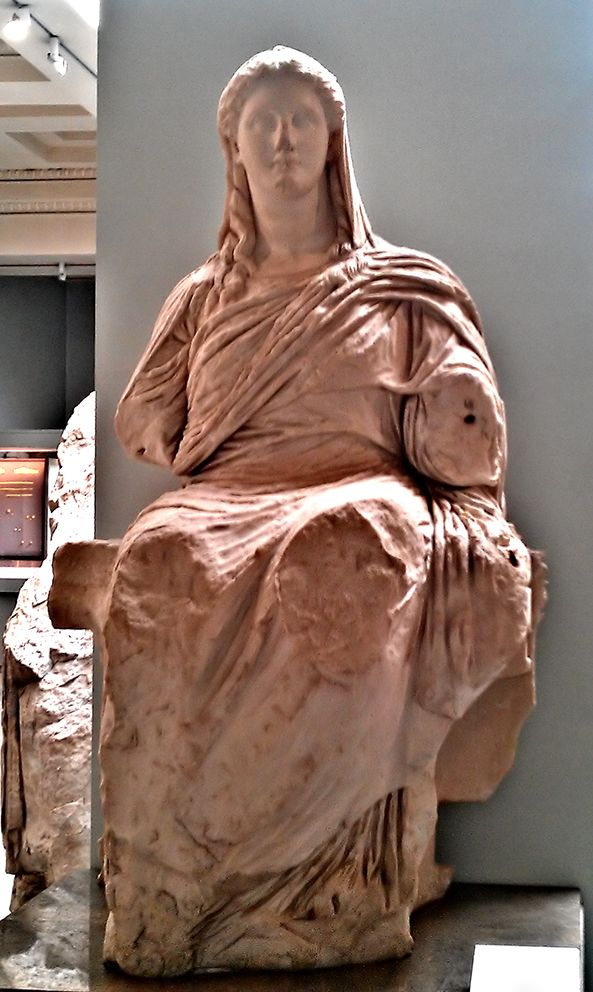

Goddess of Grain and the Fruitful Earth, Mother of the Mysteries

The Demeter of Knidos, c. 350 BC — British Museum, London
Demeter is the goddess of grain, of the ploughed field and the ripened ear, of everything that must die into the ground before it can feed anyone. She is gentler in temperament than her Olympian siblings and, precisely because of that, more frightening when crossed: hers is the only power in the pantheon that can starve the gods themselves, since sacrifice depends on harvest and harvest depends on her. Daughter of Cronus and Rhea, she is defined above all by motherhood, not as a soft sentiment but as the force whose grief, when her daughter Persephone is stolen, brings the entire cycle of growth to a halt. Out of that grief she also gives humanity its two greatest gifts: agriculture, without which civilisation cannot exist, and the Eleusinian Mysteries, the closest the Greeks came to a promise about what happens after death. She is the earth that feeds and the earth that also, eventually, receives.
The MythsThe Homeric Hymn to Demeter (c. 7th century BC) is her defining story. Persephone is gathering flowers, a narcissus of supernatural beauty planted by Gaia at Zeus's connivance, when the ground opens and Hades seizes her in his chariot and carries her down to be his queen. Only Hecate, in her cave, and Helios, who sees everything from the sky, witness the deed. Zeus, Persephone's father, had granted the girl to his brother without telling either mother or daughter: an accomplice by silence, and Demeter never quite forgives him for it. Hesiod's Theogony mentions the marriage only in passing, as a settled arrangement between brothers; the Hymn is far more interested in the mother left behind, and it is the Hymn's version, with its focus on grief and search, that has shaped the myth ever since.
For nine days Demeter searches the earth, torch in hand, tasting neither food nor drink. On the tenth, Hecate tells her she heard the girl cry out but did not see her taken, and the two go together to Helios, who confirms what happened and names Zeus's part in it. Demeter, enraged and grieving in equal measure, abandons Olympus entirely. Disguised as an old woman, she wanders to Eleusis, and while she remains apart, she lets nothing grow: seed rots in the furrow, cattle starve, and, critically, no smoke rises from human altars because there is no grain to make the offerings. The gods, deprived of sacrifice, feel it as directly as mortals feel famine. Zeus sends god after god to court her with gifts and honours; she refuses every one, and the standoff only breaks when he finally agrees to have Persephone returned.
Zeus dispatches Hermes to the underworld to fetch Persephone back into the light, and Hades, outwardly compliant, lets her go. But before she leaves he presses a pomegranate seed into her mouth, or by some tellings several seeds, knowing that to taste the food of the dead is to belong to the dead. The detail decides everything: because she has eaten there, Persephone cannot return to her mother wholly and forever. The Hymn settles on a compromise, brokered by Zeus through his mother Rhea: two-thirds of the year with Demeter, one-third below with Hades. Later writers, working the story to fit the agricultural year more exactly, sometimes give her half and half instead; the proportions vary by author, but the mechanism, one bite binding her to the underworld, does not. Demeter's joy at the reunion is immediate and total, and with it the earth blooms again, but the arrangement itself is a permanent, uneasy truce rather than a victory.
While disguised as an old woman at Eleusis, Demeter is taken in by the royal household and given the infant prince Demophoon to nurse. In secret, grateful for the family's kindness and moved by something like the love she cannot yet give her own lost daughter, she anoints the child with ambrosia by day and holds him in the hearth fire by night, burning away his mortality. His mother Metaneira spies on the ritual and screams in horror at the sight of her son in the flames, breaking the working before it can finish. Demeter, furious at the interruption, drops all disguise, reveals her full divine stature, and pronounces that the child will now live and die as any mortal, though he will keep an enduring honour at Eleusis for having been so nearly transformed. It is a story about the limits of even a goddess's power once mortal fear intervenes, and about grief displaced onto the nearest available child.
In recompense to the Eleusinians for their hospitality, and as her second great gift to humanity after the Mysteries themselves, Demeter teaches the art of grain cultivation to the Eleusinian prince Triptolemus. She gives him seed corn and a chariot, in the fullest versions winged and drawn by serpents, and sends him across the world to teach mortals how to plough, sow and reap. Vase painting shows him enthroned in the chariot receiving ears of wheat directly from Demeter's hand, with Persephone often standing beside her. The Eleusinian Mysteries themselves, the secret initiatory rites promising initiates a better fate after death, were founded in the same episode, at Demeter's own instruction to the local kings; what exactly was revealed inside the sanctuary at Eleusis was a secret initiates kept for over a thousand years, and remains one still.
Callimachus (Hymn to Demeter) and Ovid (Metamorphoses 8) tell of Erysichthon, a Thessalian who felled trees in Demeter's sacred grove to build himself a banqueting hall, ignoring the dryad's cry from within the trunk of the oldest oak. Demeter's punishment is exact and merciless: she sends the spirit of Limos, insatiable Hunger, to lodge inside him. Erysichthon eats without ever being fed, sells his possessions and finally his own daughter for food, and, in Ovid's telling, ends by devouring his own flesh. Where her grief for Persephone starves the world in mourning, her anger at Erysichthon starves one man in punishment: two faces of the same withheld harvest.
Older and stranger than her Olympian affairs is Demeter's union with the mortal Iasion, mentioned in both the Odyssey (Book 5) and Hesiod's Theogony: she lay with him in a thrice-ploughed field, and from the union came Plutus, whose name simply means wealth, in the specific sense of agricultural abundance. Hesiod adds that Zeus, on learning of it, killed Iasion with a thunderbolt, jealous of a mortal who had what he wanted. The image of the ploughed field as the site of the union is the myth's whole argument in miniature: for Demeter, fertility and cultivation are never separable, and wealth itself is simply what the tended earth is willing to give.
Epithets and DomainsHer most widespread cult title, honoured at the Thesmophoria, a women-only autumn festival celebrated across the Greek world. The name ties agriculture directly to the settled laws and customs that farming makes possible.
The goddess of the young, unripe crop, worshipped on the Athenian Acropolis alongside Ge Kourotrophos. The spring aspect, before the grain has set.
The straightforward title for the goddess of ripened produce, attested in cult across the Greek world.
Worshipped at Thelpusa in Arcadia, where Pausanias (8.25) records the local myth of her rape by Poseidon in the form of a stallion while she searched for Persephone in the form of a mare; her fury at the assault gave the cult its name.
The mourning aspect worshipped in a cave at Phigalia in Arcadia (Pausanias 8.42), where her cult image showed her horse-headed and dressed in black, withdrawn into darkness after the assault and the loss of her daughter.
The goddess as source of what rises from the earth: the harvest given upward from below, rather than sent down from the sky as Zeus's rain and thunder are.
The aspect bound to her great sanctuary and the Mysteries founded there: the promise of a better portion after death, granted to initiates.
Demeter is the purest Greek expression of the Great Mother, and she holds a special place in the Jungian literature: Jung's essay on the Kore, published with Kerényi's studies of Eleusis, treats the Demeter and Persephone pair as a single archetypal system, mother and maiden as two poles of one feminine pattern, each implying the other. Jean Shinoda Bolen, in Goddesses in Everywoman, makes Demeter the archetype of the nurturer: the psyche whose central drive is to feed, grow and provide, for whom caring is not one activity among others but the axis of identity. Her gifts in myth are exactly the archetype's gifts in life: agriculture (sustained, patient cultivation) and the Mysteries (meaning made out of loss).
The light expression is the person who makes things grow, and the range matters: children, yes, but equally students, teams, gardens, institutions, anyone and anything that thrives on steady tending. Demeter consciousness understands time the way a farmer does, in seasons rather than sprints; it does not harvest in March or grieve that seedlings are not oaks. Its generosity is structural (Triptolemus is given the seed corn and the chariot and sent to teach the whole world, the mentor's gift with no licence fee), and its emotional honesty about loss is the archetype's deepest wisdom. The myth of the divided year is, among other things, the most accurate picture of mourning in ancient literature: grief is not defeated but seasonal, the world genuinely does die for a third of every year, and the return is real too.
The shadow works by the same mechanisms inverted. The withheld harvest becomes care used as leverage: the nurturer who goes on strike, suddenly and totally, after years of unappreciated giving, and discovers that everyone starves before anyone apologises. The Demophoon episode names a subtler danger, the displaced investment: grief or emptiness poured into someone else's child, someone else's project, an intensity of cultivation the recipient never asked for and the actual parent interrupts in horror. And the Persephone bond, read from the shadow side, is the mother who cannot let the daughter be taken by her own life: every departure an abduction, every son-in-law a Hades. Bolen's blunt question for the pattern is the right one: who are you when there is no one to feed? The archetype's developmental work is to have an answer, because the empty field is coming, every year, and the goddess herself only survived it by founding a mystery in it.
In Modern LifeDemeter runs more of the modern world than the modern world admits. She is the people leader who is the actual reason the team stays; the teacher whose classroom feeds students in every sense; the founder of the family business who still signs the birthday cards; nurses, therapists, HR directors, the colleague who notices you have not eaten. Organisations depend on their Demeters exactly as the Olympians depended on the harvest, and with the same complacency: the supply is assumed until the day it stops.
In coaching, the pattern presents most often at two crisis points. The first is burnout, which for a Demeter is not tiredness but soul-level depletion: giving has continued long past the point where anything replenished it, because giving is who she is and stopping feels like ceasing to exist. The intervention the archetype itself suggests is not "self-care" as another chore but the fallow field: scheduled, guilt-free unproductivity, defended as fiercely as any harvest. The second is the strike, the myth's own plot: the moment a chronically unthanked nurturer withdraws everything at once, and a household or department suddenly learns what she was holding up. The strike is always read as sudden; it never is. The lead indicators (requests going unanswered, the birthday cards stopping) were visible for months to anyone watching the fields.
The growth edge mirrors the myths precisely. Letting Persephone go: the direct report ready for a role she cannot give, the child ready for a life that excludes her, released without a winter. Naming terms instead of withholding: Demeter got her daughter back not by starving the world but at the moment negotiation finally replaced silence, and the strike, in retrospect, was the price of having no earlier language for "this is not acceptable." And the Triptolemus test, which separates the light mother from the shadow one cleanly: the true nurturer teaches the skill and gives away the seed corn; the shadow keeps everyone hungry enough to need her.
CorrespondencesNone in the Greek system. Ceres, the first asteroid discovered (1801, now a dwarf planet), carries her Roman name by modern astronomical convention; astrological use of it is modern.
Boedromion (roughly September–October), the month of the Greater Mysteries at Eleusis, and Pyanepsion, the month of the women's Thesmophoria at the autumn sowing.
Gold of ripe grain, green of the young shoot; black for her mourning aspect, worn by the horse-headed image of Demeter Melaina at Phigalia. The Phigalian image is attested by Pausanias; treating these as practice colours is modern inference.
The sheaf of wheat, the pair of torches (carried in her search and in the Mysteries' iconography), the polos crown, the winged serpent-chariot of Triptolemus, the kiste (the covered basket of the Mysteries).
The pig above all: piglets were the standard offering of the Thesmophoria and the preliminary purification of the Mysteries. The snake, constant in Eleusinian imagery. The horse belongs to her only in the dark Arcadian cults of Thelpusa and Phigalia.
Wheat and barley, definitively hers. The poppy, which grows in grainfields and appears with wheat in her imagery. Pennyroyal, from the kykeon (below). Myrtle, worn by initiates at Eleusis. Beyond these, plant lists are modern convention.
First fruits of the harvest (Athens formalised the aparchai, grain tithes to Eleusis, by decree); piglets at the Thesmophoria; cakes and honey. In the Hymn she refuses wine explicitly and asks instead for kykeon, and wineless libations are recorded in several of her cults. Bread baked from scratch is a favoured modern offering: contemporary, but exactly in her grammar.
The Greater and Lesser Eleusinian Mysteries; the Thesmophoria, the women-only sowing festival and one of the most widespread festivals in the Greek world; the Haloa and Proerosia at Eleusis; the Chloaia in spring for the green shoot.
Eleusis above all, with the City Eleusinion at Athens; the Arcadian cave sanctuaries of Phigalia and Thelpusa; Knidos (source of the great British Museum statue); Enna in Sicily, centre of her western cult, whose meadows Cicero describes as the very site of the abduction.
None securely attested; her observances were festival-based and seasonal rather than monthly.
Two details for practice. The kykeon, the one ritual recipe antiquity actually wrote down for her: the Hymn specifies barley meal, water and glechon (pennyroyal), the drink Demeter herself requested at Eleusis, and the drink the initiates took before the Mysteries. And the Mysteries themselves hold a lesson about ritual knowledge: for around a thousand years, initiates by the thousand every year, and the secret never leaked. The plausible explanation is not discipline but the nature of what was transmitted: an experience rather than a proposition, something that could not be betrayed in words because it never lived in words. That is the standard any serious initiatory working is aiming at.
Zeus, father of Persephone; Poseidon, who took her by force at Thelpusa while she searched for her daughter; the mortal Iasion, her lover in the thrice-ploughed field
Persephone, by Zeus; the horse Arion and the goddess Despoina, by Poseidon; Plutus, wealth, by Iasion
Hecate, who joins her search bearing torches and remains close to Persephone ever after; Helios, the witness who names the abductor; Hades, the abductor; Zeus, the accomplice by silence who arranged the whole affair without telling her
Demeter was among the children Cronus swallowed at birth and Zeus later forced him to disgorge, which makes her, like her siblings, older in years than she is in daylight: a goddess who spent an age unseen before she ever tended a single field.